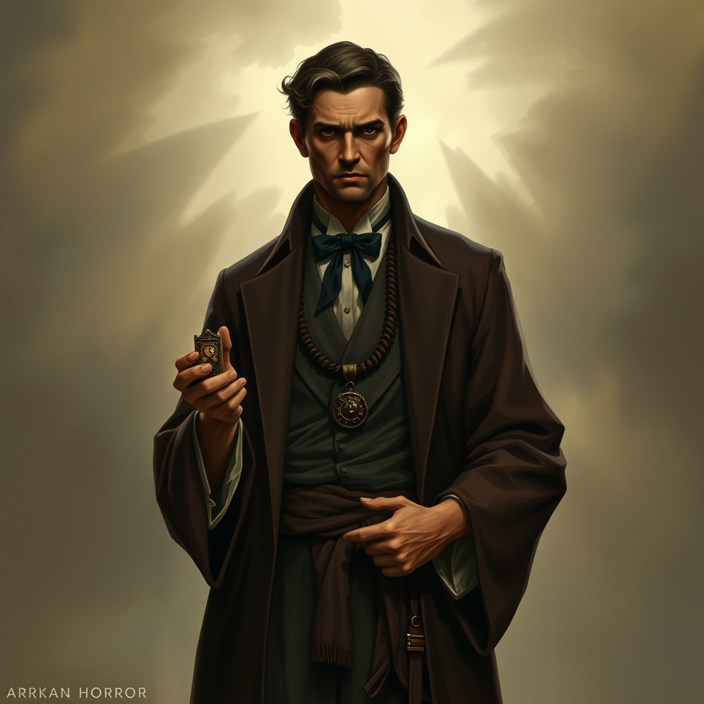
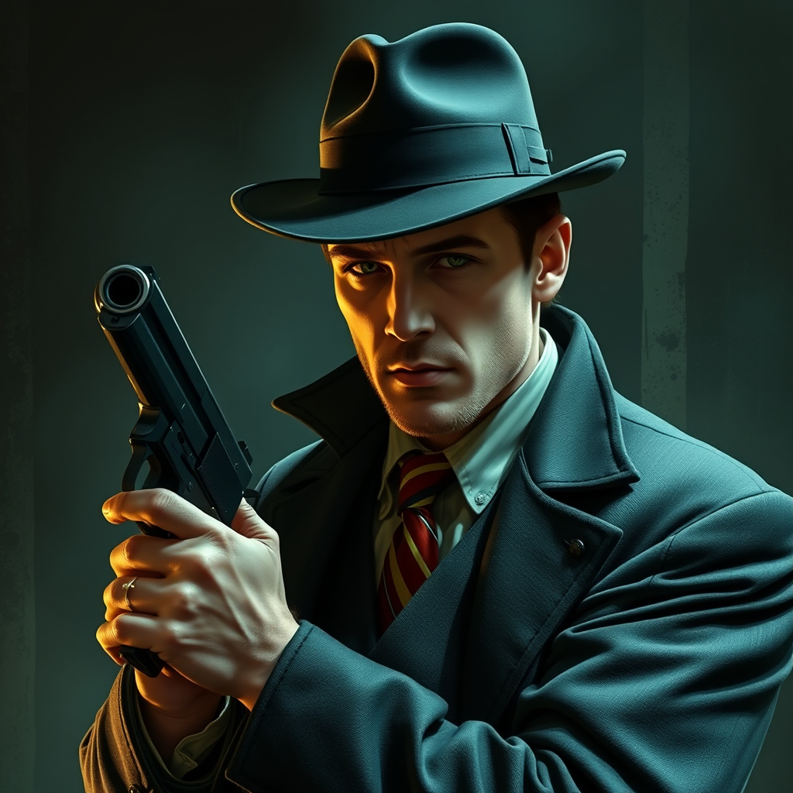
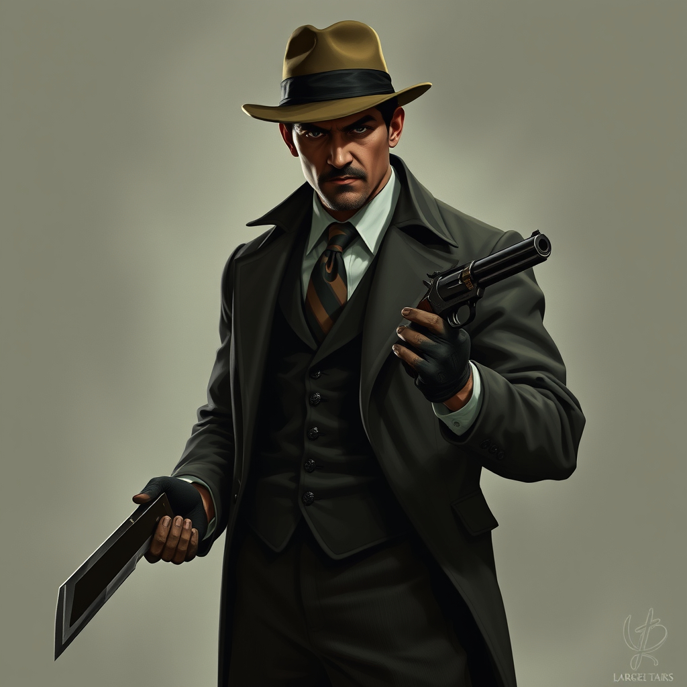

The Whispering Frost
Overview
Blizzards have been plaguing Massachusetts. Some people are starting to suspect that something is amiss, because they have never been this fierce and unrelenting before. Rumours are starting to spread about voices on the wind - people are calling it the Whispering Frost - and some locals are disappearing without a trace. Supplies are running low, and the local gangs are using this opportunity to fill their coffers with supply work - both legal and illegal. When a small team are asked to escort supplies to the northern part of the state and find out why their contact has fallen silent, they find more than they bargained for.
Characters
| Name | Class | About | Portrait |
|---|---|---|---|
| Peter Gill | Hunter | The Hitman - who always has a trick up his sleeve to get out of trouble when he's hired to do the job that nobody else will take. |  |
| Adelei | Mystic | The Chef - who has secret knowledge passed down from his family, and is looking the make a great name for himself. |  |
| McG | Seeker | The Paranormal Investigator - who left the Boston PD when he couldn't find the answers he was looking for there. |  |
| Dan Pacho | Guardian | The Enforcer - who knows what needs to be done, and anything that gets in his way may find itself missing body parts very soon. |  |
The Adventure
Act 1: The Frozen Warning
In which the investigators try to find out why the gang's supply chain is under attack, and why the coordinator for the north of the state has fallen silent.
Act 2: The Icebound Trail
In which the investigators find more information about the mysterious idols and who is using them.